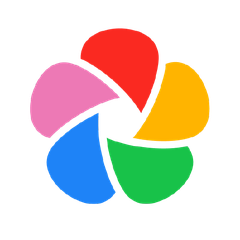

今日 GitHub · 本地优先
11万人
把照片搬回自己家
#01
自托管照片管理
照片自己管
immich-app / immich

家里旧电脑一搭，手机照片视频自动备份，不压缩画质、不限速
单日 +175 · 稳居总榜前排
11万星
自动备份
不压缩
照片的钥匙自己拿
| 00| 25| 50| 75| 99
#02
外设本地设置
免账号调鼠标
AprilNEA / OpenLogi

罗技键鼠的本地设置工具——改键、调 DPI、滚轮速度全能调
单日 +115 · 3 个月新项目
零遥测
改键调DPI
滚轮速度
鼠标设置不用登录
#03
桌面下载管理器
全能下载器
agalwood / Motrix

界面干净得像十年前的软件，全协议、全平台，下载交给专业的
单日 +344 · 7 年常青
7年常青
全协议
全平台
下载就交给专业的
#04
本地模型硬件适配
一键测跑啥模型
AlexsJones / llmfit

本地模型的体检站——一条命令先测硬件能跑啥，再挑模型，20G 弯路替你省了
单日 +198 · 本期收藏点
先测硬件
再挑模型
不白下载
先测再下不踩坑
#05
AI 安全自查
AI自查漏洞
usestrix / strix

给自己的应用做安全体检——AI 帮你找漏洞、给修复建议，上线前心里有底
单日 +598 · 今日涨星最高
开源
AI体检
找洞修复
上线前先做体检
本地优先 · 今日五项目
你会先试哪个？
01immich照片自己管
02OpenLogi免账号调鼠标
03Motrix全能下载器
04llmfit一键测跑啥模型
05strixAI自查漏洞
关注 GitHub星探 · 下期见